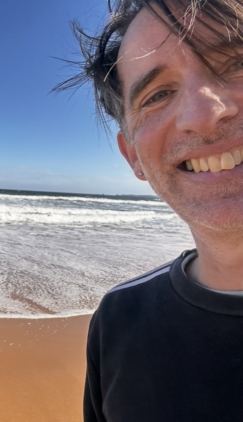

Performance Audit · 2022
Mental Health of Child Protection Practitioners
Lead project manager - follow-up audit on supporting child protection practitioners.
Victorian Auditor-General’s OfficeREAD THE REPORT →Understanding what helps families find safety and connection, and reduces family violence and child abuse.
Reports, evaluations and writing projects I have authored and managed.
Lead project manager - follow-up audit on supporting child protection practitioners.
Victorian Auditor-General’s OfficeREAD THE REPORT →Lead project manager - implementation reviews of three areas of Victorian family violence reform.
Family Violence Reform Implementation MonitorREAD THE REVIEWS →Lead author and project manager - evaluation of a financial literacy program for refugee and migrant women.
Women’s Health in the NorthREAD THE REPORT →Author - lessons from Australia’s increase in refugee intake.
Asylum InsightREAD THE ARTICLE →Lead author - submission to the Victorian Parliament’s Education and Training Committee.
Centre for Multicultural YouthREAD THE SUBMISSION →Author of report on settlement support in an Australian town.
United Nations High Commissioner for Refugees (UNHCR)READ THE PAPER →With 25+ years in government, community services and consulting, I’ve worked across system reform, policy and operational roles, so I understand how policy and practice shape each other.
My work is grounded in direct practice with children, young people and families in the child protection system, adult and child victim survivors of family violence and child sexual abuse, and people who use family violence.
I am available for short and longer projects, including independent research, evaluation, community engagement and group facilitation.
QualificationsMaster of Social Work (with Distinction)Post-Graduate Diploma in Social Science
(Policy and Human Services)
Rates available upon request.
